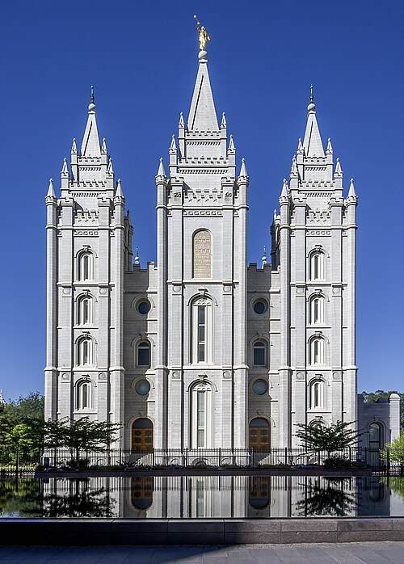
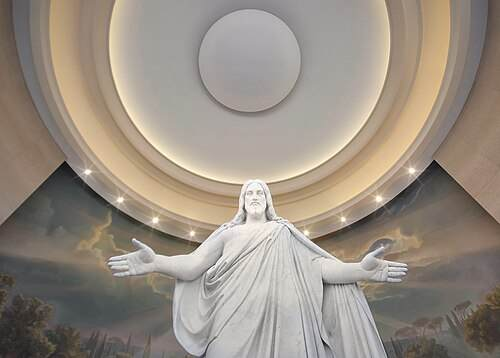
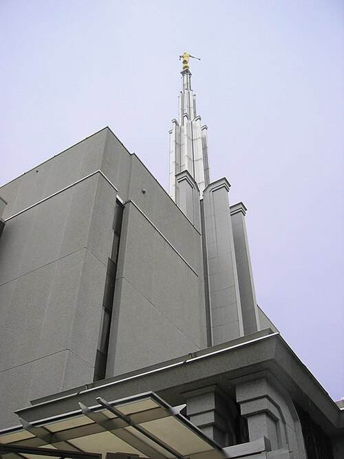
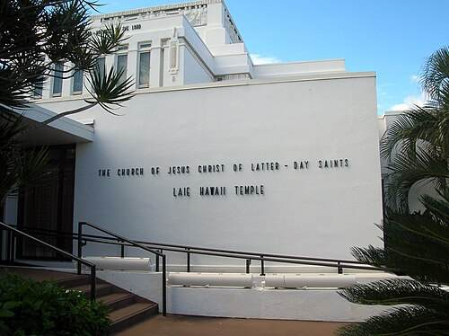
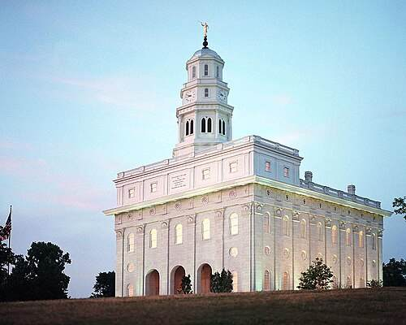
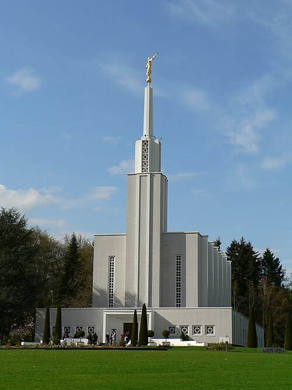
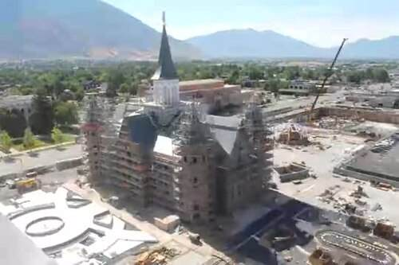
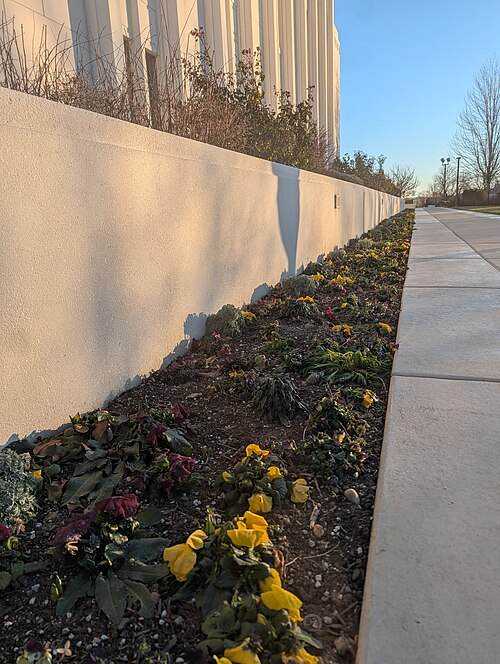

Temples Around the World

Salt Lake Temple
Salt Lake City, Utah · Dedicated 1893
Photo: Acroterion · CC BY-SA 4.0
Rome Italy Temple
Rome, Italy · Dedicated 2019
Photo: NateBergin · CC BY 4.0
Tokyo Japan Temple
Tokyo, Japan · Dedicated 1980
Photo: David Wiley · CC BY 2.0Washington D.C. Temple
Kensington, Maryland · Dedicated 1974
Photo: Joe Ravi · CC BY-SA 3.0
Laie Hawaii Temple
Laie, Hawaii · Dedicated 1919
Photo: Gh5046 · Public domain
Nauvoo Illinois Temple
Nauvoo, Illinois · Dedicated 2002
Photo: Altus Photo Design · CC BY 2.0
Bern Switzerland Temple
Zollikofen, Switzerland · Dedicated 1955
Photo: MTPICHON · Public domain
Provo City Center Temple
Provo, Utah · Dedicated 2016
Photo: Century Media · CC BY-SA 3.0
Twin Falls Idaho Temple
Twin Falls, Idaho · Dedicated 2008
Photo: Bobjgalindo · CC BY-SA 4.0Temple photographs are credited to their creators. Select a photo credit to view its source and license.